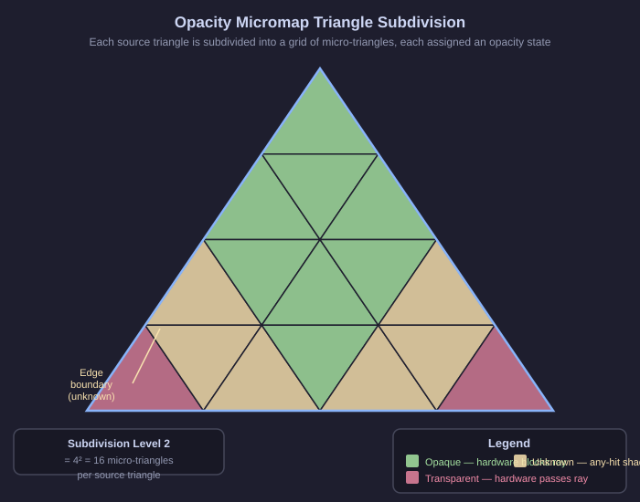

Micromaps: Teaching the Hardware What It Already Should Know
The Central Idea
Everything we have discussed so far converges on a single insight: the GPU is doing expensive runtime work to discover information that is fully knowable ahead of time. The alpha texture of a leaf does not animate. The opacity distribution of a fence mesh does not change from frame to frame. If we could bake this information into the acceleration structure itself — the same data structure the hardware uses for BVH traversal — the hardware could make opacity decisions without invoking any shader at all.
This is the complete description of an Opacity Micromap: a data structure, attached to a triangle mesh in the GPU’s acceleration structure, that subdivides each triangle into a regular grid of smaller triangles and assigns each one a pre-computed opacity state. The word "micro" is used precisely: these are not additional geometric triangles that the ray tracer has to traverse. They are sub-triangle classifications that the traversal hardware reads as metadata, using them to accelerate the decision of whether a given ray-triangle intersection represents an actual hit.
Two Formats: 2-State and 4-State
VK_KHR_opacity_micromap defines two opacity micromap formats. Which format you choose depends on how much precision your alpha content requires at boundaries.
The 2-state format (VK_OPACITY_MICROMAP_FORMAT_2_STATE_EXT) stores one bit per micro-triangle. Each micro-triangle is either Transparent (0) or Opaque (1). This binary classification is the simplest possible model: no shader is ever invoked — hardware immediately commits or discards every hit based on the stored bit. The 2-state format is ideal when you have full control over alpha content and can guarantee that no micro-triangle genuinely straddles an alpha boundary, or when you are willing to accept the small visual error that comes from forced binary classification.
The 4-state format (VK_OPACITY_MICROMAP_FORMAT_4_STATE_EXT) stores two bits per micro-triangle and supports four distinct states:
-
Transparent (0): the hit is discarded immediately without running any shader. Zero cost.
-
Unknown-Transparent (1): the any-hit shader is invoked; if the shader does not explicitly make a decision, traversal defaults to treating the hit as transparent.
-
Unknown-Opaque (2): the any-hit shader is invoked; if the shader does not explicitly make a decision, traversal defaults to treating the hit as opaque.
-
Opaque (3): the hit is committed immediately without running any shader. Zero cost.
The two Unknown states are the key to making the 4-state scheme both correct and practical. Instead of trying to perfectly classify every pixel of every triangle in advance — which would require infinite subdivision — we can be conservative. Where the alpha texture is clearly solid across the entire micro-triangle, we encode Opaque (3). Where it is clearly empty, we encode Transparent (0). Only in the boundary regions, where a single micro-triangle straddles the alpha cutoff edge, do we admit uncertainty and fall back to the any-hit shader using one of the two Unknown states. Unknown-Transparent is the typical choice for foliage: the hint biases the driver toward transparency, which matches the statistical expectation at an alpha boundary.
For a well-designed leaf texture, the Opaque and Transparent regions dominate. The boundary between them is a thin perimeter. If the micro-triangle grid is fine enough, that perimeter region corresponds to perhaps five or ten percent of all micro-triangles. The other ninety to ninety-five percent are classified definitively, and the any-hit shader never fires for them. The cost reduction is proportional.
Visualizing the Subdivision

Consider a single leaf triangle — a flat quadrilateral whose alpha texture shows a maple leaf. The micromap subdivision overlays a regular grid on this triangle. In the center of the leaf, the alpha is solidly 1.0. Every micro-triangle in that region is sampled and found to be fully opaque. They are colored green in our mental model — hardware will commit any hit that falls here, instantly.
At the edges of the quad far from the leaf shape, the alpha is solidly 0.0. Every micro-triangle in that region is sampled and found to be fully transparent. They are colored red — hardware will skip any hit that falls here, instantly.
At the precise boundary of the leaf silhouette, where the texture designer blended the alpha from 1.0 to 0.0 to avoid harsh edges, some micro-triangles straddle both values. These are colored yellow — unknown. They are the only ones that will trigger the any-hit shader during traversal. This yellow ring is thin, perhaps one or two micro-triangles wide, and it represents a small fraction of the triangle’s area.
Subdivision Levels: Precision at a Cost
The subdivision level controls how fine the micro-triangle grid is. At level 0, the entire triangle receives a single classification — one state for the whole thing. This is only useful for geometry that is genuinely uniform (entirely opaque or entirely transparent), which is unusual for alpha-tested content.
At level 1, each original triangle is subdivided into 4 micro-triangles. At level 2, it becomes 16. At level 3, it becomes 64. At level 4, it becomes 256. Each increase in level roughly quadruples the number of micro-triangles, improving the accuracy of the classification at the cost of more storage and more upfront computation.
For typical foliage textures, level 2 or level 3 provides a good balance. A level-3 micromap for a single leaf triangle contains 64 micro-triangles. The leaf shape is approximated reasonably well at this resolution — most of the leaf body is classified Opaque, most of the empty space is classified Transparent, and the unknown ring is narrow. Going to level 4 would improve accuracy slightly but quadruple the memory footprint for likely marginal runtime benefit.
The right choice depends on the texture content and the performance targets of the application. Content with sharp, high-contrast alpha masks (like a chain-link fence with near-binary alpha) benefits greatly from even low subdivision levels because the boundaries are crisp. Content with soft, gradual alpha transitions (like hair cards or feathers) may require higher subdivision levels to keep the unknown fraction small.
Building the Micromap: A One-Time Investment
The micromap build process has two conceptually distinct phases that can be separated in time:
Phase 1 — Classification (CPU, one-time per asset): For each triangle in an alpha-tested mesh, and for each micro-triangle at the chosen subdivision level, the builder samples the alpha texture at several points within the micro-triangle — typically at the centroid or at multiple jittered positions. It averages those samples and compares against a threshold. If the average alpha is above the upper threshold (close to 1.0), the micro-triangle is classified Opaque. If it is below the lower threshold (close to 0.0), it is classified Transparent. If it falls between the thresholds, it is classified Unknown (specifically Unknown-Transparent or Unknown-Opaque, depending on application policy). The output is a compact 2-bit-per-micro-triangle array — a few hundred kilobytes for a typical mesh.
Phase 2 — GPU Build (device-only, runs at load time): The classified 2-bit data is uploaded to GPU memory. A vkCmdBuildAccelerationStructuresKHR command is recorded and submitted to the device queue. The driver performs internal layout transformation and compaction, producing the micromap VkAccelerationStructureKHR in the hardware’s native traversal format. VK_KHR_opacity_micromap provides no host-side build path — this GPU submission step is always required.
The two phases can be combined at load time (online mode) or separated (offline mode). In online mode, both classification and GPU build run when the scene is first loaded — useful during development but adds startup cost proportional to mesh and texture complexity. In offline mode, Phase 1 runs as a pre-process during content authoring; the resulting 2-bit arrays are saved to disk and shipped with the application. At runtime only Phase 2 executes, keeping startup cost minimal. The GPU build cannot itself be pre-baked: the driver needs to run it on the target hardware to produce its native internal representation.
This is a one-time operation per mesh, per texture, per subdivision level. For a shipping game or visualization application, the payoff ratio is enormous — the classification cost is paid once during authoring, and the benefit accumulates over every frame the application renders.
The output of this process is a compact array of 2-bit values (for the 4-state format): one per micro-triangle. Opaque is encoded as 3, Transparent as 0, Unknown-Transparent as 1, and Unknown-Opaque as 2. For most foliage, Unknown-Transparent (1) is used for boundary micro-triangles: it lets the any-hit shader make the final call while hinting that the outcome is more likely transparent. For a mesh with 10,000 leaf triangles at subdivision level 3, the micromap data is 10,000 times 64 micro-triangles times 2 bits, which is about 160 kilobytes. Using the 2-state format halves this to approximately 80 kilobytes, at the cost of eliminating the any-hit fallback entirely. This memory footprint is negligible compared to the mesh data itself.
Where the Data Lives
The classified micro-triangle data is uploaded to the GPU and used to construct a VkAccelerationStructureKHR whose type is set to VK_ACCELERATION_STRUCTURE_TYPE_OPACITY_MICROMAP_KHR. This is a deliberate unification in the KHR API: rather than introducing a separate object type for micromap data, VK_KHR_opacity_micromap folds the micromap directly into the existing acceleration structure abstraction. The same VkAccelerationStructureKHR handle you use for BLASes and TLASes is also the handle for a micromap — the type field at creation time is what distinguishes them. The micromap acceleration structure is allocated via vkCreateAccelerationStructureKHR (from VK_KHR_acceleration_structure), passing VK_ACCELERATION_STRUCTURE_TYPE_OPACITY_MICROMAP_KHR as the type. Building the micromap uses vkCmdBuildAccelerationStructuresKHR with geometryType set to VK_GEOMETRY_TYPE_MICROMAP_KHR — the same device-side command used for all acceleration structure builds. There is no separate host-side build path for micromaps in the KHR API; all micromap construction is GPU-driven.
Once the micromap acceleration structure is built, it is attached to the corresponding BLAS during the BLAS build or rebuild. The attachment is specified through the VkAccelerationStructureTrianglesOpacityMicromapKHR structure, which is chained into the geometry description passed to the acceleration structure build. The micromap field in this structure is the VkAccelerationStructureKHR handle of the micromap you just built. The indexBuffer field, which maps original triangles to their micromap entries, is a plain VkDeviceAddress — there is no host address variant in the KHR API, reflecting the device-only design philosophy. At that point, the micromap data becomes part of the acceleration structure itself — stored in GPU memory in the hardware’s native format for traversal.
The traversal hardware reads the micromap data during BVH traversal as part of its normal operation. There is no additional API call, no shader modification, no synchronization primitive to manage on a per-frame basis. Once the BLAS is built with the micromap attached, the hardware simply uses it, every frame, for every ray that touches the mesh — automatically, transparently, at hardware speed. Ray query shaders do require the OpacityMicromapKHR SPIR-V execution mode, declared via the SPV_KHR_opacity_micromap extension, to inform the compiler that opacity micromap data may influence traversal results; this is a one-line declaration in your GLSL or HLSL source and carries no runtime cost.
Lossy Builds: Trading Perfection for Higher Precision
The VK_KHR_opacity_micromap API offers one additional degree of freedom: the lossy build flag, VK_BUILD_ACCELERATION_STRUCTURE_MICROMAP_LOSSY_BIT_KHR. When this flag is set during the micromap build, the driver is permitted to apply lossy compression to the micromap data. In exchange for that freedom, the driver may be able to support higher effective subdivision levels — pushing the micro-triangle grid finer than would otherwise fit in the available memory budget. Subdivision levels that exceed the standard maxOpacity4StateSubdivisionLevel cap may become available, up to the value reported in maxOpacityLossy4StateSubdivisionLevel.
The practical implication is nuanced. A lossy build may occasionally promote a micro-triangle from Unknown to either Opaque or Transparent based on compressed state, which means the any-hit shader will not fire for that micro-triangle even though the uncompressed classification was ambiguous. For most foliage and most viewing distances, this is visually imperceptible. For content where precision at the alpha boundary is critical — fine hair, feathers, or close-up leaf geometry — you may prefer to avoid the lossy flag and accept slightly coarser subdivision. The choice belongs to the application.
The Profound Simplicity
Step back and appreciate what has happened. We have moved the most expensive part of alpha-tested ray traversal — the per-hit, per-frame shader invocation for opacity discovery — out of the hot path entirely. We replaced it with a pre-baked data structure that the hardware reads at fixed-function speed. We did not change the visual result: the any-hit shader still fires for Unknown micro-triangles, ensuring correctness at the boundaries. We did not change the application’s API footprint significantly. We added one build step and one attachment structure.
For most foliage, this means that perhaps 95% of all shadow ray interactions with leaf geometry now cost nothing in shader terms — they are handled entirely by hardware, in the same cycle budget as opaque geometry traversal. Only that thin ring of edge pixels — the 5% that genuinely straddles the alpha boundary — still pays the any-hit shader cost. The improvement is not a rounding error. It is a qualitative change in the nature of the workload.